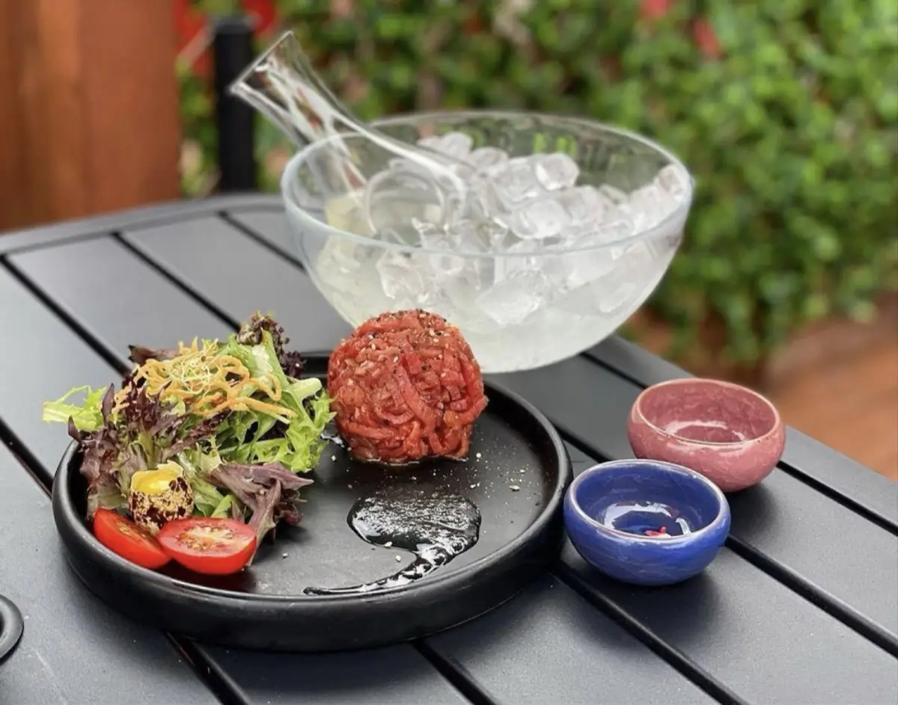
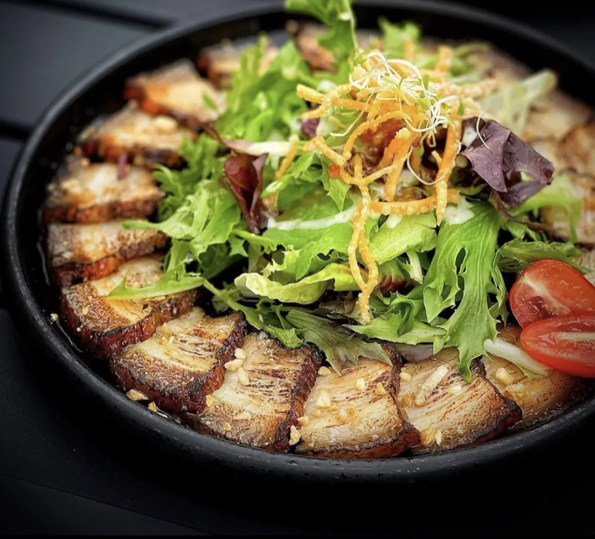
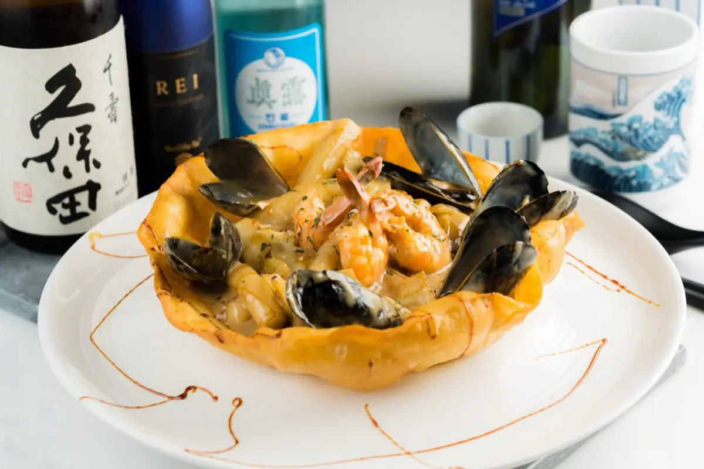
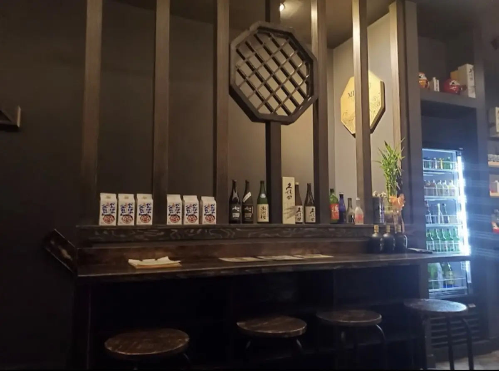
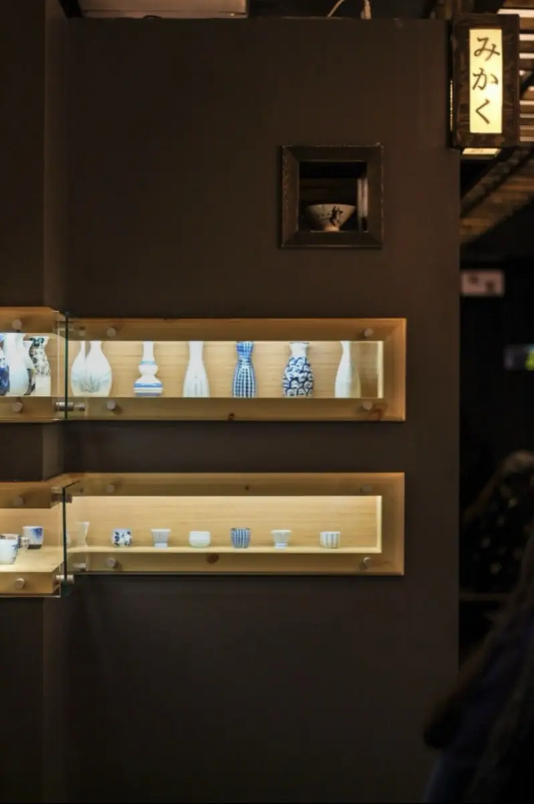

01 · House signature
Mikaku Beef Tartare $21.99
One of the best Korean beef tartare in Toronto.

North York’s late-night izakaya. Japanese bar plates with a Korean accent, seven pages of sake, and a shelf of daruma dolls who have seen it all.
We’re where you end up after work, after the movie, after everywhere else has closed. Plates come out fast. Sake gets poured generously. The daruma dolls keep watch, and they never judge.
We cook Japanese bar food the way we like to eat it: smoky, buttery, a little spicy, and made for passing around the table.


Five plates our regulars keep coming back for. Add a bottle of yuzu sake. Fight over the last bite. Still stuck? Ask your server. Reviewers say their picks were the best part of the night.

One of the best Korean beef tartare in Toronto.

Creamy and slightly sweet, a must-get.

Salty and smokey.

Really unique and filling.


You don’t need to know junmai from daiginjo. Tell us what you like and we’ll pour. Or pick a mood:
“Be prepared to wait… but MAN is it worth the wait.”
We’re cozy, so weekends fill up fast. Book ahead, or grab a bar seat. The bar has no time limit.



Shoes off, sit low, stay late. Ask for it when you book a group.
No time limit at the bar, unlike the tables. Regulars know.
Open until 2:30am, six nights a week. Yes, really.
Small lot out front. Blink and you’ll miss it. Street parking nearby.
 Look for the black awning6180 Yonge St · just north of FinchGet directions →
Look for the black awning6180 Yonge St · just north of FinchGet directions →